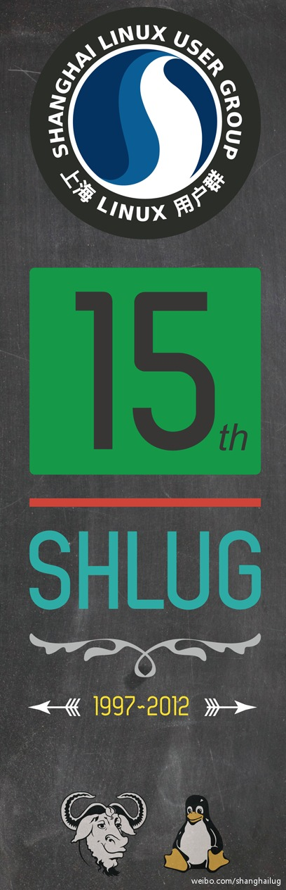
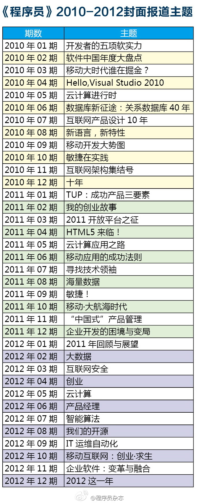

活动地点在上海创业者公共实训基地主楼，上次#OpenStack中国行#上海站也是在那里。@上海Linux用户组:上海Linux用户组15周年庆祝活动即将到来！SHLUG成立于1997年，是中国最早的Linux User Group，在12月23日也就是本周日，我们将举办15周年技术交流分享活动，会场将能够容纳300人，欢迎大家互相转告前来参与活动，详情请见：网页链接 
2012年两期和创业有关。 //@蒋涛CSDN: 大数据 go mobile 软硬整合 开源 是我关注的重点@程序员编辑部:下面的表格是《程序员》2010-2012这三年的封面报道主题。对于我们2013年的选题方向，大家有何建议？ 
媒体人自嘲么？ //@飞象网项立刚: 没有一家媒体盖得起50层的大楼（央视大裤衩那是财政的钱），因为传播的商业价值低，写文章、写书的没有一个不是穷人。同样的时间付出回报却极低。服务却有高回报且可复制，金融服务赚钱且不说，同样的钱做和媒体和开个餐馆，我相信开餐馆的回报是做媒体的5倍。@飞象网项立刚:互联网最有价值的能力是传播，自由、无疆界、免费是它的追求，这样可令传播更高速。但传播的商业价值不高。移动互联网最大的价值是服务，服务要求管理、个性化、有针对性，这样服务才能精准，才能真正帮用户解决问题。服务的商业价值很高。其实认真想腾讯、华为做的都是服务。
 网页链接 )
网页链接 )